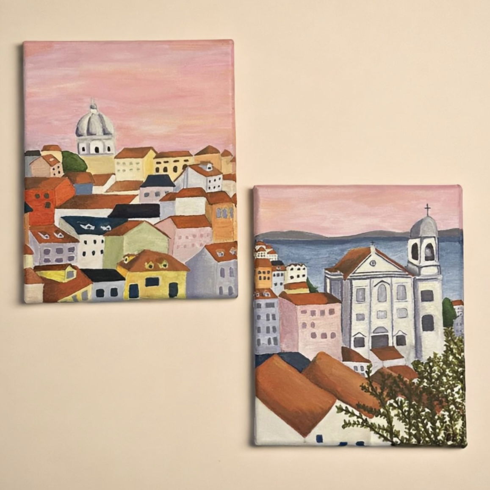

Recent Featured Works:
Reproduction of Paul Cézanne's Still Life with Apples, c. 1890
Colosseum at Dusk
Inspired by a photograph from @overcalm on Tumblr.
I've Got a BMW Habit
For my client, @bmw_habit

Vista de Lisboa
Inspired by photographs, reflecting my love for Lisbon, Portugal.
Art enables us to find ourselves and lose ourselves at the same time. The mind that responds to the intellectual and spiritual values that lie hidden in a poem, a painting, or a piece of music, discovers a spiritual vitality that lifts it above itself, takes it out of itself, and makes it present to itself on a level of being that it did not know it could ever achieve.
Art Piece inquiries?
Fill out a form and a team member will reach out to you!
Inquire